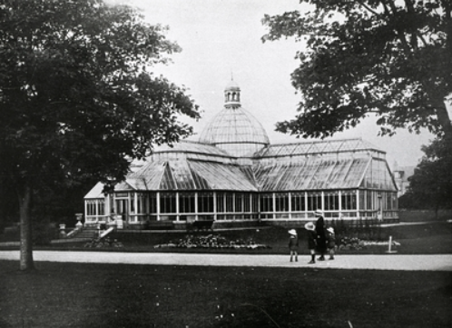

The History of Duthie Park
Duthie Park opened in 1883 after it was gifted to the city by Miss Elizabeth Crombie Duthie in 1880 for the wellbeing and recreation of Aberdeen inhabitants.
Duthie Park is loved by locals and visitors due to its wonderfully restored Victorian features such as the band stand, fountains, and boating ponds. The park also has an astro turf area for ball games and two other play areas; one for younger children and another for the more adventurous child which has been voted best play space in Scotland. The Park Café is also very popular with visitors.
In the 1900s, the David Welch Winter Gardens was added to the park. Unfortunately, it was severely damaged in 1969 due to extreme gales, so it was demolished and replaced with the building we know and love today.

The "Winter Gardens" now houses one of the most visited public indoor plant collections in Scotland and provides an oasis no matter what time of year it is! The Winter Gardens provides a unique venue for weddings and hosts an annual carol concert every December.
Duthie Park gained Aberdeen's first Green Flag Park Awards in 2013 and has maintained it ever since. The award is granted by Keep Scotland Beautiful and recognises quality green spaces. The park and The Winter Gardens are one of the regular places where Keep Scotland Beautiful and Britain in Bloom judges are taken when they visit Aberdeen for their judging. The city has won a medal in either Britain in Bloom or Beautiful Scotland every year since 2008 and has been award-winning in the competitions since 1964.
The park is a great place for dog walks, picnics, children riding bikes, and visits in all weathers.